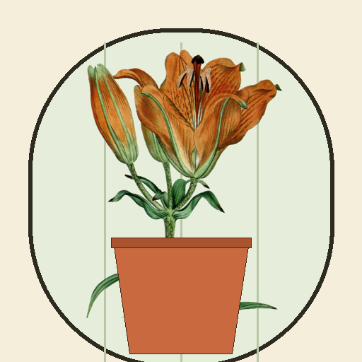

<- all projects

Greenhouse Lane
PC
Volume
Live
Bring a 1789 glasshouse back to bloom. Grow, cross-pollinate, sell every stem.
At the end of Greenhouse Lane stands a glasshouse built in 1789 by the botanist Agnes Wren. Half its panes are cracked and the town council wants it gone by autumn. Grow 20 flowers painted from real 18th-century botanical plates across the Sun, Shade and Tropical wings, keep the pots watered and sell blooms to walk-in customers and order cards. Cross two varieties to find hybrids that sell for double, and fill Agnes's journal with 20 varieties and 20 hybrids. Over 6 chapters, bloom the Wren Lily, lost for 200 years.